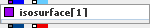

Maps volumetric data creating surface of constant data values (isosurface). Outputs both a geometry object and an irregular field containing all data components restricted to the surface. A modified marching cube algorithm resolving incompatibilities of triangulations of neighbor surface fragments is used.
| input port | attributes | type | description |
| inField | req, trigger | any 3D field | data to be mapped (must have a numeric scalar component) |
| output port | attributes | type | description |
| outObj | geometry object | color or texture mapped isosurface | |
| outField | on demand | irregular surface field (triangulated) | triangulated isosurface with all original data components interpolated to the surface |